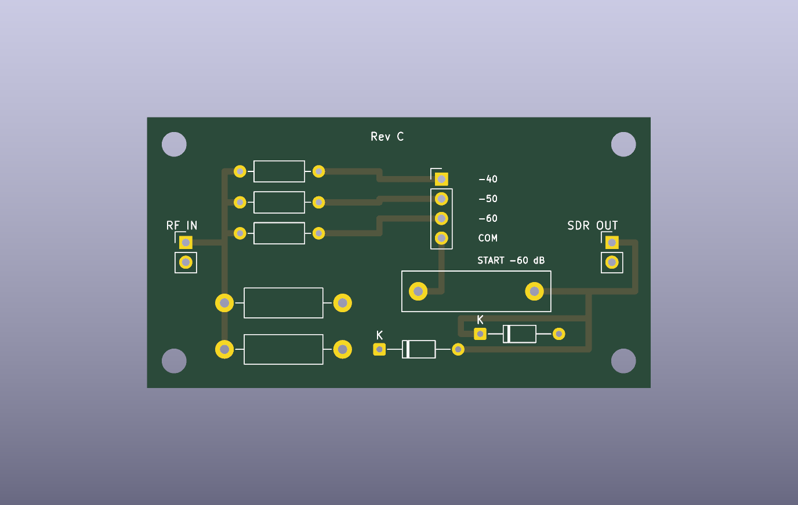

DIY TEST EQUIPMENT
Build a low-cost RF sampler/attenuator for AM transmitter testing
A cheap SDR becomes much more useful as a transmitter instrument when the RF first passes through a known 50 Ω load, a large attenuation network and a DC block.
The custom PCB is now complete in KiCad 9. It passes electrical-rules checking with 0 ERC errors/warnings and PCB design-rules checking with 0 DRC violations and 0 unconnected pads. Those checks validate the CAD design, not the finished hardware: each assembled unit still needs RF calibration before its dB labels are treated as measured values.
Rev C architecture
AM transmitter
│
├── 2 × 100 Ω / 1 W in parallel → 50 Ω dummy load
│
└── 2P3T selector → 4.99 kΩ / 15.8 kΩ / 49.9 kΩ
│
1 µF film DC block
│
optional 1N5711 clamps
│
SDR output
The PCB is 65 × 35 mm on two-layer FR4 with a bottom ground plane, four M3 mounting holes and panel headers for RF IN, SDR OUT and the external rotary selector. The selector header is labeled −40 / −50 / −60 / COM, and the board explicitly says START −60 dB.

The three Rev C ranges
| Selector | Series resistor | Nominal attenuation into 50 Ω | 100 mW TX gives about |
|---|---|---|---|
| −40 dB | 4.99 kΩ, 1% | −40.07 dB | −20.07 dBm |
| −50 dB | 15.8 kΩ, 1% | −50.02 dB | −30.02 dBm |
| −60 dB | 49.9 kΩ, 1% | −59.99 dB | −39.99 dBm |
These are calculated values for a nominal 50 Ω SDR input. Calibration should determine the actual insertion loss of each finished range and those measured offsets should be stored in the analyzer software.
Download the Rev C design
Download fabrication ZIP Download full KiCad project
The fabrication ZIP contains Gerbers and plated/non-plated drill files. The full project adds the native KiCad 9 schematic and PCB, BOM, generator scripts, schematic PDF, render and ERC/DRC reports.
Amazon parts basket
Disclosure: The Amazon links below are affiliate links (paid links). If you buy through them, Resonance Radio may earn a commission at no additional cost to you. Prices below were checked September 27, 2026 and can change.
| Part | Amazon candidate | Price checked | Use |
|---|---|---|---|
| SMA panel connectors | 5-pack SMA female bulkhead connectors (paid link) | ~$4.49 | RF input and sampled output |
| Range selector | RS25 2P3T, 2-pole/3-position rotary switch (paid link) | ~$6.69 | Select −40 / −50 / −60 dB |
| Dummy-load resistors | 100 Ω, 1 W, 1% metal-film resistors (paid link) | ~$5.49 / 50 | Two in parallel form the 50 Ω load |
| Common-value resistor assortment | 50-value 1/4 W, 1% metal-film assortment (paid link) | ~$8.99 | Rev B prototype only: useful for 4.7 kΩ / 14.7 kΩ / 47 kΩ approximation; not the exact Rev C values |
| DC-block capacitor | 1 µF, 100 V polypropylene film capacitors (paid link) | ~$9.99 / 50 | Blocks accidental bias-tee DC |
| Protection diodes | 1N5711 Schottky diodes (paid link) | ~$6.99 / 20 | Optional anti-parallel overload clamp |
| Metal enclosure | 80 × 50 × 20 mm aluminum project enclosure (paid link) | ~$8.49 | Shielding and mechanical protection |
| Prototype board | 50 × 70 mm FR4 prototype boards (paid link) | ~$6.99 / 10 | Useful for the perfboard prototype; unnecessary if ordering Rev C PCB |
Exact Rev C attenuator resistors: use 4.99 kΩ, 15.8 kΩ and 49.9 kΩ, each 1% or better. I have not added Amazon affiliate links for these values because I have not verified a suitable current Amazon listing for all three; use a reputable component distributor if necessary rather than substituting silently.
Why the transmitter still sees nearly 50 Ω
The sampler branch is many kilohms while the main load is 50 Ω, so it only weakly perturbs the dummy load. This remains a standardized bench measurement, not proof that an inexpensive short-wire transmitter itself was designed for a 50 Ω antenna.
Build and test sequence
- Populate R1 and R2 with 100 Ω / 1 W / 1% non-wirewound resistors.
- Populate the Rev C attenuation branches with 4.99 kΩ, 15.8 kΩ and 49.9 kΩ.
- Install the 1 µF film DC block. Fit the 1N5711 clamp pair only if you want the optional emergency protection.
- Wire the panel-mounted rotary selector to the PCB header marked −40, −50, −60 and COM.
- Wire the panel SMA connectors to RF IN and SDR OUT with very short leads.
- Continuity-check the unit before connecting the SDR and confirm the SDR center pin has no DC path back to the transmitter input.
- Begin every unknown measurement at −60 dB with SDR gain low and the bias tee disabled.
Keep the enclosure labeled 1 W MAX CONTINUOUS. The two load resistors provide 2 W nominal combined rating, but the lower operating label gives thermal margin in a small closed enclosure. Do not use this as a load for an unknown or high-power transmitter.
Calibrate before believing the dB labels
The selector labels are nominal. Feed a known low-level RF signal through each range, measure actual insertion loss and save those three offsets in software. That calibration absorbs resistor tolerance, switch/contact resistance, wiring loss and the SDR's actual input impedance.
A useful second check is attenuation scaling: if a suspicious spur really originates in the transmitter, it should move predictably when external attenuation changes. A spur generated by an overloaded SDR often does not. That is one of the main reasons for keeping three hardware ranges.
What about the RTL-SDR itself?
The intended receiver remains an RTL-SDR-class device with medium-wave coverage. The sampler is deliberately separate from the receiver so it can also be used with a better SDR or spectrum analyzer later. Do not connect a transmitter directly to an SDR input; use the dummy load and attenuation network.
What Rev C enables
With the sampler plus an SDR, the Resonance Radio analyzer can automate carrier-frequency logging, drift, AM modulation depth, occupied bandwidth, audio-hum sidebands and relative harmonic measurements. The next hardware gate is to assemble one Rev C unit and compare measured attenuation against the nominal −40.07 / −50.02 / −59.99 dB values.
Related: how to measure a cheap AM transmitter · sub-$100 AM station build.